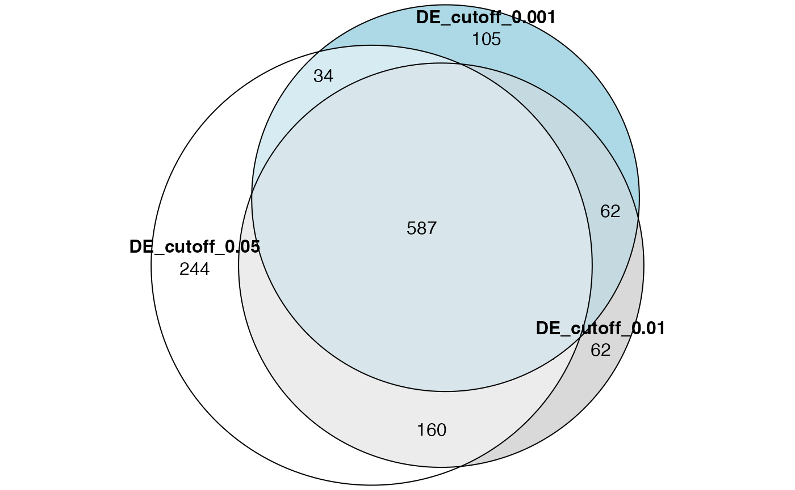
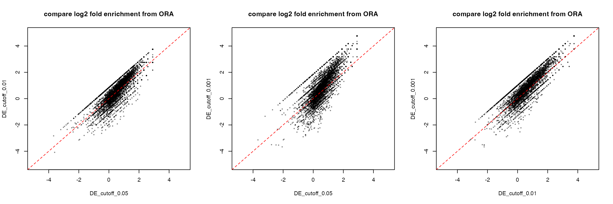

vignettes/topic2_02_implement_ora.Rmd
topic2_02_implement_ora.RmdImplementing ORA is very simple. As long as genes and gene sets are already in the correct ID types and formats, the implementation of ORA only needs several lines.
Three inputs for ORA:
genes
gene_sets
universe
We calculate the following numbers:
Number of total genes:
n_universe = length(universe)Number of DE genes:
n_genes = length(genes)Sizes of gene sets:
m = sapply(gene_sets, length)Number of DE genes in gene sets:
We rename n_genes to k:
k = n_genesWe put these variables into the 2x2 contigency table:
| in the set | not in the set | total | |
|---|---|---|---|
| DE | x |
- | k |
| not DE | - | - | - |
| total | m |
- | n_universe |
Then we can calculate p-values from the hypergeometric distribution as:
phyper(x - 1, m, n_universe - m, k, lower.tail = FALSE)which is the same as:
phyper(x - 1, k, n_universe - k, m, lower.tail = FALSE)Let’s put all these code into a function:
ora = function(genes, gene_sets, universe) {
n_universe = length(universe)
n_genes = length(genes)
x = sapply(gene_sets, function(x) length(intersect(x, genes)))
m = sapply(gene_sets, length)
n = n_universe - m
k = n_genes
p = phyper(x - 1, m, n, k, lower.tail = FALSE)
data.frame(
gene_set = names(gene_sets),
hits = x,
n_genes = k,
n_gs = m,
n_total = n_universe,
p_value = p
)
}We can further improve the function by:
universe to the total genes in gene_sets
genes and gene_sets to universe. Note this step also removes duplicated genes
ora = function(genes, gene_sets, universe = NULL) {
if(is.null(universe)) {
universe = unique(unlist(gene_sets))
} else {
universe = unique(universe)
}
# restrict in universe
genes = intersect(genes, universe)
gene_sets = lapply(gene_sets, function(x) intersect(x, universe))
n_universe = length(universe)
n_genes = length(genes)
x = sapply(gene_sets, function(x) length(intersect(x, genes)))
m = sapply(gene_sets, length)
n = n_universe - m
k = n_genes
p = phyper(x - 1, m, n, k, lower.tail = FALSE)
df = data.frame(
gene_set = names(gene_sets),
hits = x,
n_genes = k,
n_gs = m,
n_total = n_universe,
log2fe = log2(x*n_universe/k/m),
p_value = p
)
df$p_adjust = p.adjust(df$p_value, "BH")
rownames(df) = df$gene_set
df[order(df$p_adjust, df$p_value), ,drop = FALSE]
}Let’s try our ora() with 1000 random genes on the MSigDB hallmark gene sets. get_msigdb() is from the GSEAtraining package.
library(org.Hs.eg.db)## Loading required package: AnnotationDbi## Loading required package: stats4## Loading required package: BiocGenerics##
## Attaching package: 'BiocGenerics'## The following objects are masked from 'package:stats':
##
## IQR, mad, sd, var, xtabs## The following objects are masked from 'package:base':
##
## Filter, Find, Map, Position, Reduce, anyDuplicated, aperm, append,
## as.data.frame, basename, cbind, colnames, dirname, do.call,
## duplicated, eval, evalq, get, grep, grepl, intersect, is.unsorted,
## lapply, mapply, match, mget, order, paste, pmax, pmax.int, pmin,
## pmin.int, rank, rbind, rownames, sapply, setdiff, sort, table,
## tapply, union, unique, unsplit, which.max, which.min## Loading required package: Biobase## Welcome to Bioconductor
##
## Vignettes contain introductory material; view with
## 'browseVignettes()'. To cite Bioconductor, see
## 'citation("Biobase")', and for packages 'citation("pkgname")'.## Loading required package: IRanges## Loading required package: S4Vectors## Warning: package 'S4Vectors' was built under R version 4.3.2##
## Attaching package: 'S4Vectors'## The following object is masked from 'package:utils':
##
## findMatches## The following objects are masked from 'package:base':
##
## I, expand.grid, unname## ##
## Attaching package: 'GSEAtraining'## The following object is masked _by_ '.GlobalEnv':
##
## ora
gs = get_msigdb(version = "2023.2.Hs", collection = "h.all")
genes = random_genes(org.Hs.eg.db, 1000, "ENTREZID")## 'select()' returned 1:many mapping between keys and columns## gene_set hits n_genes n_gs
## HALLMARK_HEDGEHOG_SIGNALING HALLMARK_HEDGEHOG_SIGNALING 5 214 36
## HALLMARK_XENOBIOTIC_METABOLISM HALLMARK_XENOBIOTIC_METABOLISM 16 214 200
## HALLMARK_ANDROGEN_RESPONSE HALLMARK_ANDROGEN_RESPONSE 9 214 101
## HALLMARK_KRAS_SIGNALING_DN HALLMARK_KRAS_SIGNALING_DN 15 214 200
## HALLMARK_MYOGENESIS HALLMARK_MYOGENESIS 15 214 200
## HALLMARK_APOPTOSIS HALLMARK_APOPTOSIS 12 214 161
## n_total log2fe p_value p_adjust
## HALLMARK_HEDGEHOG_SIGNALING 4384 1.5085682 0.02899916 0.6219054
## HALLMARK_XENOBIOTIC_METABOLISM 4384 0.7127089 0.03354442 0.6219054
## HALLMARK_ANDROGEN_RESPONSE 4384 0.8682786 0.05667660 0.6219054
## HALLMARK_KRAS_SIGNALING_DN 4384 0.6195995 0.06219054 0.6219054
## HALLMARK_MYOGENESIS 4384 0.6195995 0.06219054 0.6219054
## HALLMARK_APOPTOSIS 4384 0.6106107 0.09262817 0.6763795The only restriction of ora() is the ID type for genes should be the same as in gene_sets.
The file de.rds contains results from a differential expression (DE) analysis.
de = readRDS(system.file("extdata", "de.rds", package = "GSEAtraining"))
de = de[, c("symbol", "p_value")]
de = de[!is.na(de$p_value), ]
head(de)## symbol p_value
## 1 TSPAN6 0.0081373337
## 2 TNMD 0.0085126916
## 3 DPM1 0.9874656931
## 4 SCYL3 0.2401551938
## 5 C1orf112 0.8884603214
## 6 FGR 0.0006134791Take the symbol and p_value columns, set cutoff of p_value to 0.05, 0.01 and 0.001 respectively to filter the significant DE genes (of course, in applications, you need to correct p-values), apply ora() to the three DE gene lists using the GO BP gene sets (think how to obtain the GO gene sets from org.Hs.eg.db) and compare the ORA results (the whatever comparison you can think of).
If you EntreZ ID in the gene sets, you need to convert gene symbols for the DE genes to EntreZ IDs. But you can also choose to use gene symbols in the gene sets.
The three DE gene lists:
de_genes_1 = de$symbol[de$p_value < 0.05]
de_genes_2 = de$symbol[de$p_value < 0.01]
de_genes_3 = de$symbol[de$p_value < 0.001]
length(de_genes_1)## [1] 3156
length(de_genes_2)## [1] 1708
length(de_genes_3)## [1] 817Get the GO BP gene sets. Note genes in de_genes_* are symbols, thus genes in gene sets should also be symbols.
gs = get_GO_gene_sets_from_orgdb(org.Hs.eg.db, "BP", gene_id_type = "SYMBOL")## 'select()' returned 1:many mapping between keys and columns
gs[1]## $`GO:0000002`
## [1] "PARP1" "SLC25A4" "DNA2" "TYMP" "ENDOG" "LIG3"
## [7] "MEF2A" "MPV17" "OPA1" "POLG" "RRM1" "SSBP1"
## [13] "TOP3A" "TP53" "DNAJA3" "LONP1" "AKT3" "PPARGC1A"
## [19] "POLG2" "RRM2B" "SLC25A36" "TWNK" "METTL4" "PIF1"
## [25] "SESN2" "SLC25A33" "MGME1" "FLCN" "PRIMPOL" "STOX1"We perform ORA for the three DE gene lists.
Compare number of significant GO terms:
sum(tb1$p_adjust < 0.05)## [1] 1025
sum(tb2$p_adjust < 0.05)## [1] 871
sum(tb3$p_adjust < 0.05)## [1] 788Actually we can see gene set enrichment analysis is a very robust method which is not sensitive to DE cutoffs (at least for this dataset).
Make a Venn (Euler) diagram:
library(eulerr)
plot(euler(list("DE_cutoff_0.05" = tb1$gene_set[tb1$p_adjust < 0.05],
"DE_cutoff_0.01" = tb2$gene_set[tb2$p_adjust < 0.05],
"DE_cutoff_0.001" = tb3$gene_set[tb3$p_adjust < 0.05])),
quantities = TRUE)
Compare log2 fold enrichment from the three ORA results. First take the common GO terms in the three ORA tables.
Then simply make pairwise scatter plots:
par(mfrow = c(1, 3))
plot(tb1[cn, "log2fe"], tb2[cn, "log2fe"], pch = 16, cex = 0.5, col = "#00000080",
xlim = c(-5, 5), ylim = c(-5, 5), main = "compare log2 fold enrichment from ORA",
xlab = "DE_cutoff_0.05", ylab = "DE_cutoff_0.01")
abline(a = 0, b = 1, lty = 2, col = "red")
plot(tb1[cn, "log2fe"], tb3[cn, "log2fe"], pch = 16, cex = 0.5, col = "#00000080",
xlim = c(-5, 5), ylim = c(-5, 5), main = "compare log2 fold enrichment from ORA",
xlab = "DE_cutoff_0.05", ylab = "DE_cutoff_0.001")
abline(a = 0, b = 1, lty = 2, col = "red")
plot(tb2[cn, "log2fe"], tb3[cn, "log2fe"], pch = 16, cex = 0.5, col = "#00000080",
xlim = c(-5, 5), ylim = c(-5, 5), main = "compare log2 fold enrichment from ORA",
xlab = "DE_cutoff_0.01", ylab = "DE_cutoff_0.001")
abline(a = 0, b = 1, lty = 2, col = "red")